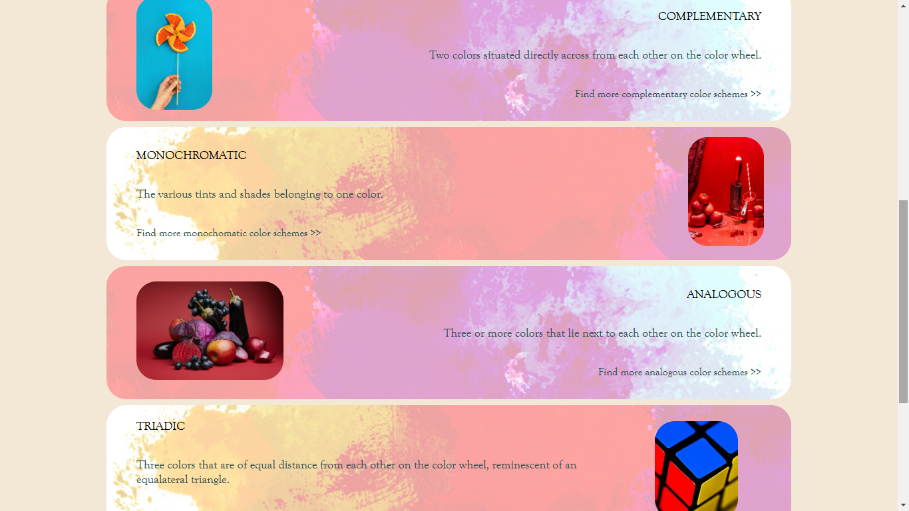
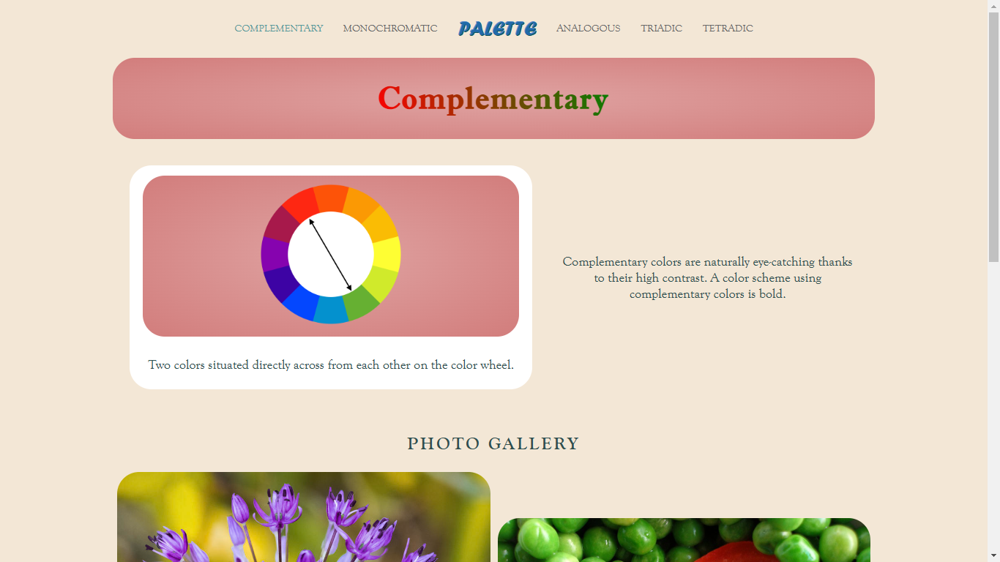
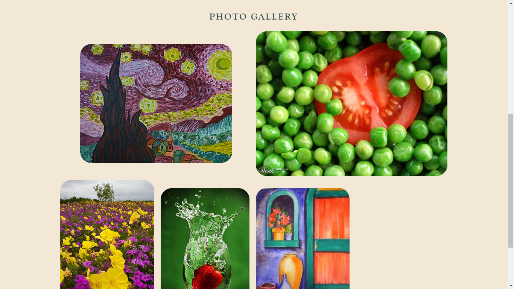
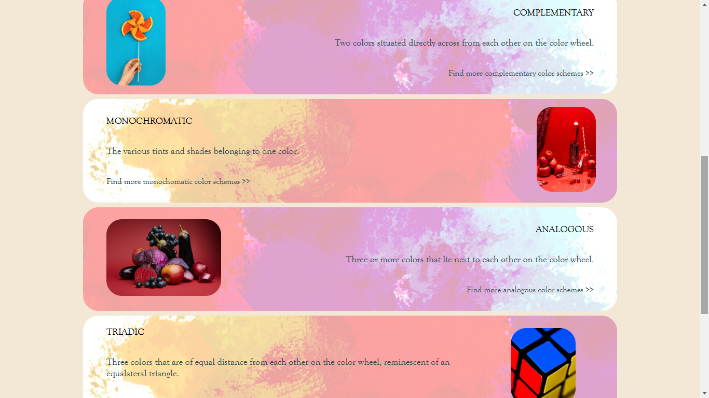
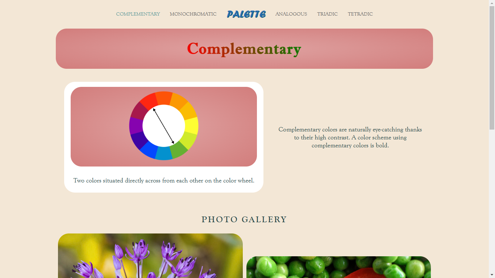
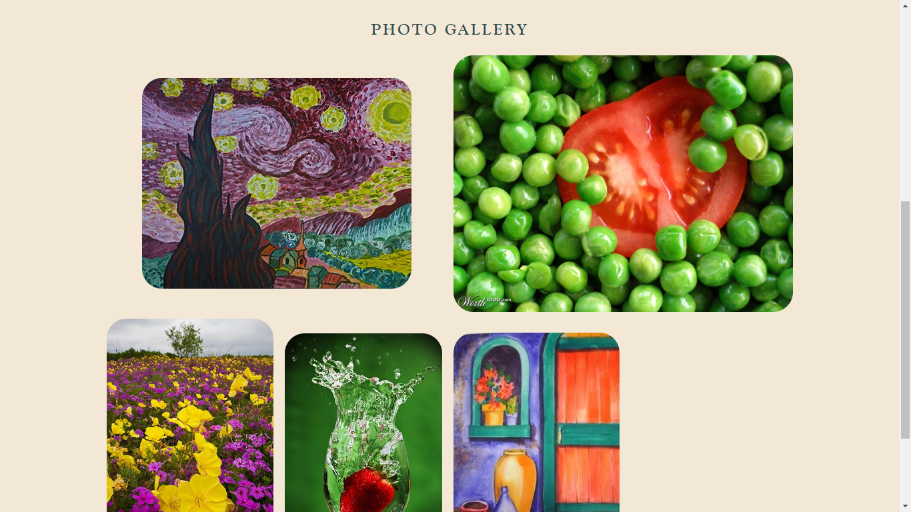

Color Palette
 





I was browsing color combinatons at the time when coding and designing this website.
For this personal project, I wanted to utilize all the color combinations when designing the website.
I wanted the graphics to draw the majority of the visitor's attention, so I used pale, dull colors for the majority of the website, and saved the more bold colors for the headings and visuals.
Click here to view the repository on my GitHub
Click here to visit the website